Andover Elementary School · Connecticut assessment and accountability results · School year 2025–26
A personal report by Scott Sauyet · scott@sauyet.com · Not an official town document
All figures are from the Connecticut State Department of Education’s public EdSight system: the Performance Index (released late August 2026), Next Generation Accountability (released late October 2026), and Per Pupil Expenditures by Function. Comparisons cover Connecticut’s local and regional town districts (165 in 2024-25, 164 in 2025-26); charter districts, regional educational service centers, the technical high schools and state-agency schools are excluded. English and mathematics figures are exactly as the state publishes them. The combined performance index is this report’s own calculation, weighting the three subject indices by the number of students tested; the equal-weight alternative is reported alongside it. Need-adjusted figures are residuals from a statewide regression on high-needs share. Spending data stop at 2024-25. The one figure that cannot be checked against public data, the high-needs achievement gap, is identified as such where it appears.
The Rivereast News Bulletin reported the results on September 18, under the headline “Andover Elementary Celebrates Increase in Test Scores.” The article followed Principal Taylor Parker’s presentation to the Board of Education on September 9, and she did not undersell it:
I’m so excited. Thank you for letting me share in celebrations, because we definitely have a lot to celebrate.
— Taylor Parker, AES principal, Board of Education meeting, Sept. 9, 2026
Every figure in that article checks out. We compared each one against the state’s own published data — the proficiency rates, the growth figures, the statewide averages and the index scores — and they match. What follows is not a correction. It is the context a single school’s announcement is not in a position to supply: where those numbers put Andover among Connecticut’s 164 town districts, which of them carry the most weight, and which should be held lightly.
The underlying numbers are public, and they are worth setting out in full, because a result this good invites two opposite mistakes. One is to wave it away as noise or as a demographic accident. The other is to treat a single year as proof of something permanent. Neither is right, and the data is detailed enough to say so precisely.
Everything below comes from the Connecticut State Department of Education’s public EdSight system: the assessment results released in late August, and the accountability results released at the end of October. Every figure is also published here as a spreadsheet — the full workbook carries the district-by-district data behind this report, and names the sheet each figure can be checked against.
The results
Connecticut scores every district on a 0-100 performance index, separately for each subject. Andover’s rose 6.1 points in English and 6.8 in math.
The performance index is the state’s summary of how students did on the annual assessments — Smarter Balanced in English and math, the NGSS science test — placed on a common 0-100 scale so districts can be compared. The state publishes it subject by subject; it does not publish a single combined figure. Connecticut’s stated target is 75 in each subject. A year ago Andover was below it in both English and math. It is now above it in both.
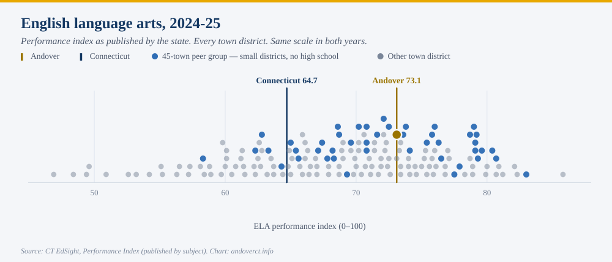
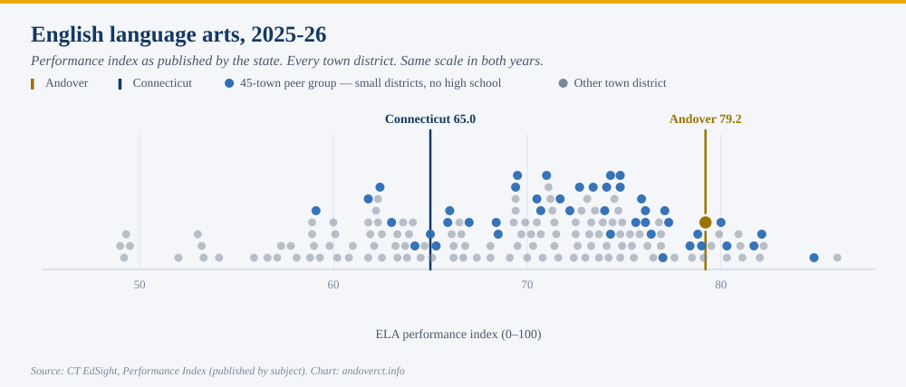
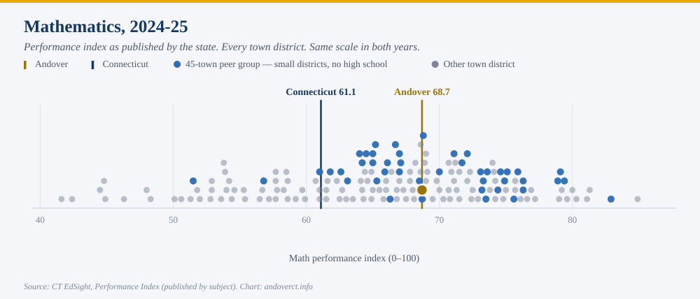
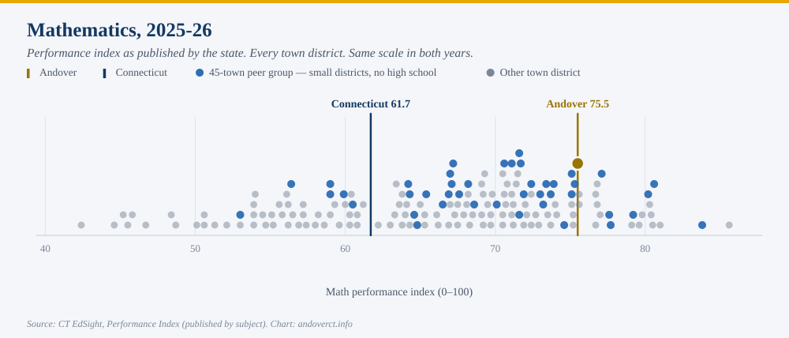
Each pair is drawn on one scale, so the movement between years is directly comparable. Across the state, the English index went from 64.7 to 65.0 and the math index from 61.1 to 61.7.
+6.1 Andover’s one-year change in English language arts, from 73.1 to 79.2
+6.8 Andover’s one-year change in mathematics, from 68.7 to 75.5
1st of 164 where each of those gains ranks among town districts
+0.1 and +0.4 the median change across town districts, English and math
Neither is a close call. In English, the next largest gain was 4.5 points; in math, 5.6. Six districts gained three points or more in English and ten in math. Just over half of all districts improved at all: 55 percent in English, 59 percent in math.
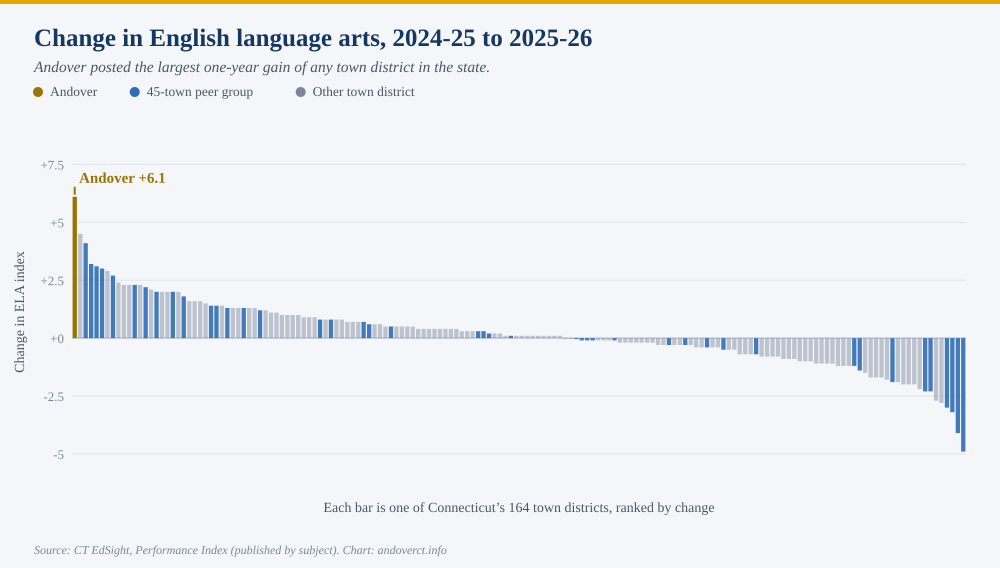
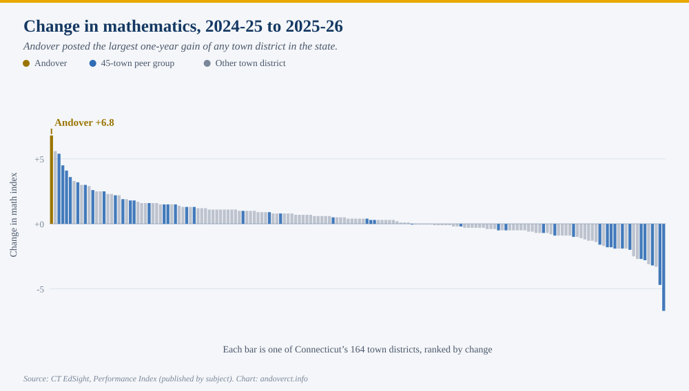
Among the state’s town districts, Andover moved from tied for 55th to 15th in English, and from tied for 67th to 23rd in math.
In Andover’s own record, neither subject has moved this far in a single year. The previous largest one-year gain was 3.8 points in English, between 2021-22 and 2022-23, and 1.1 points in math.
It is worth being exact about one thing the charts do not say. These are Andover’s largest one-year gains, and its best results since 2018-19 — but not its best ever. Andover scored 81.0 in English and 76.5 in math in 2018-19, before the pandemic. What 2025-26 represents is most of the way back to where Andover was before COVID.
Science
Science fell. How you combine the three subjects changes the ranking, so here it is every way.
−3.3 science, from 76.5 to 73.2, now just below the state’s target of 75
Science is tested only in grades 5, 8 and 11, so in Andover it rests on roughly two dozen students in a single grade — small enough that a few children moving a band or two will swing it several points. It is the least stable of the three figures in either direction, and it should not carry much weight on its own. It is included here because leaving it out would be selective reporting of exactly the kind this report sets out to avoid.
Because EdSight does not publish a single figure across subjects, any combined number is a choice someone has made. The one used in the rest of this report is ours: the three subject indices weighted by the number of students who sat each test. That keeps science, which only three grades take, from counting as a full third of the result. By that measure Andover rose from 71.5 to 76.9, also the largest gain in the state.
Weight the three subjects equally instead, and the answer changes. Andover’s combined gain becomes 3.2 points, and it ranks sixth among the 156 districts reporting all three — because the one subject that fell is given the same weight as the two that rose. That is a legitimate way to look at it, and it is why the headline claim on this report rests on the subjects themselves: first in the state in English, and first in the state in math.
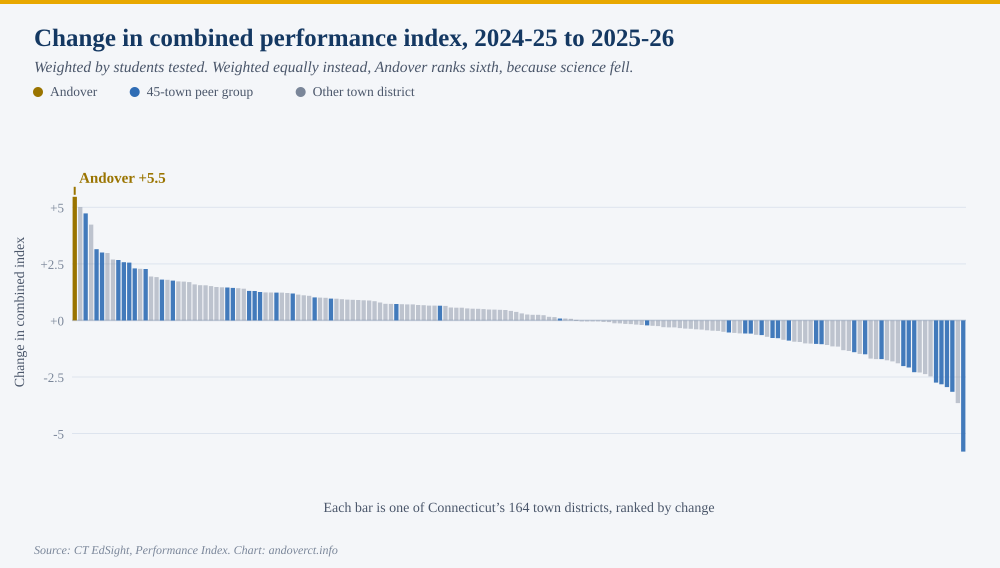
Student need
District test scores mostly measure which students a district serves. Andover’s gain survives that adjustment.
This is the single most important thing to understand about school test data, and it is the reason a result like Andover’s deserves scrutiny before celebration.
Across Connecticut, the strongest predictor of a district’s results is not its spending, its size, or its leadership. It is the share of its students who are classified as high needs — eligible for free or reduced-price meals, an English learner, or a student with a disability. On the combined index, that one variable explains about three quarters of the difference between districts.
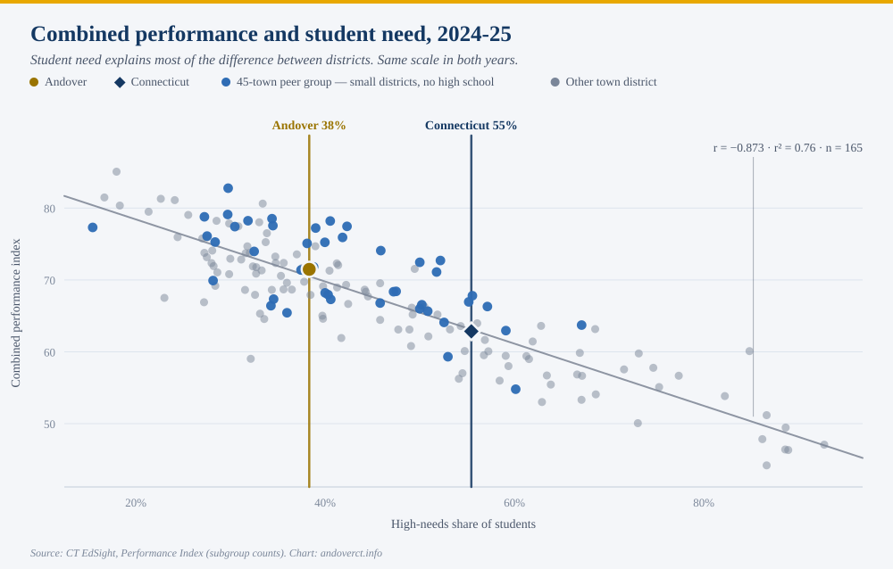
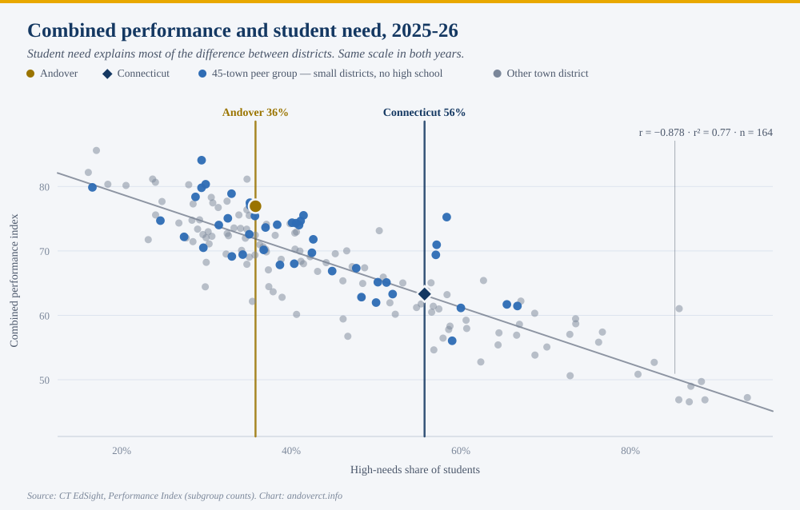
The relationship is almost exactly as strong in the new year as the old one: r = −0.873 in 2024-25, −0.878 in 2025-26. Every ten percentage points of additional high-needs enrollment is associated with roughly four and a half fewer index points.
So the fair question is not “did Andover’s score go up” but “did it go up by more than the change in its students would predict.” Andover’s high-needs share did fall, from 38.3 percent to 35.8 percent. That accounts for part of the gain — but only part.
+5.5 Andover’s raw gain on the combined index
+4.1 the gain that remains after adjusting for the change in student need
+1.0 → +5.1 Andover’s position relative to what its demographics predict
Measured against the statewide pattern, Andover went from performing about as expected to performing five points better than expected — the district’s strongest showing on that measure since 2018-19.
On the combined index, Andover’s rank among the state’s town districts moved from 61st of 165 to 22nd of 164. Within its own comparison group of small districts without a high school, from 22nd of 45 to 9th of 44.
Caveats
About a hundred students sit these tests. That cuts both ways.
Andover Elementary tested 109 students in 2025-26. In a district that size, each child is worth roughly a full percentage point of any subgroup figure, and year-to-year results are genuinely volatile: on the combined index, districts testing fewer than 200 students swing about two and a half times as much from year to year as districts testing 600 or more.
That volatility is exactly why Andover’s result is notable rather than routine — its gains are the largest in the state in both English and math, including against the small districts where large swings are most common. But it is also why a single year should not be read as a trend. The honest statement is that Andover has had an excellent year, on top of a long record of performing at or above what its demographics predict, and that one more year of data will say much more than this one does.
Growth
Growth is the measure that best isolates what a school contributes. On it, Andover’s year is more remarkable than the headline suggests.
The performance index measures where students are. It does not measure how far they moved, and because it tracks so closely with student need, it is a limited tool for judging a school’s own contribution.
Connecticut publishes a better measure: academic growth, which matches each individual student to their own prior-year score and asks what share of their personal growth target they achieved. It is far less determined by demographics — student need explains about a quarter of the variation in growth, against three quarters for the combined index — which makes it the fairer measure of a district’s work.
Connecticut reports growth two ways. The growth rate is the share of students who met their target — the figures Parker gave the board. The average percentage of target achieved counts partial progress too, and it is the version the state uses in its accountability system. On that second measure:
84.9 Andover, 2025-26, averaged across English and math
60.1 Connecticut, 2025-26
69.5 and 61.4 the same two figures a year earlier
Andover went from eight points above the state to twenty-five, while the state itself edged down.
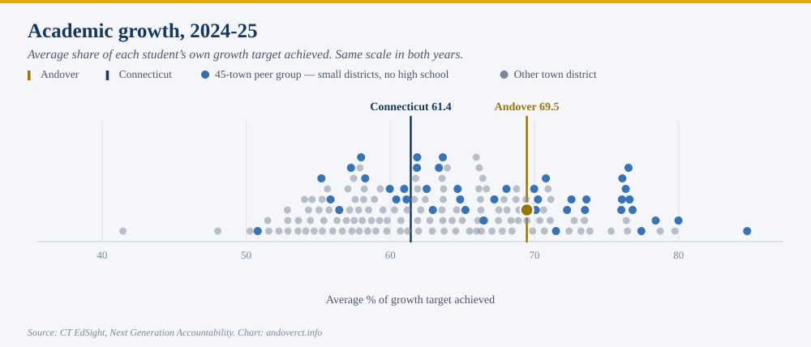
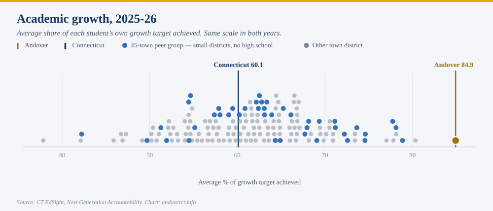
This is the more impressive half of Andover’s year, and it is the half least explained by who its students are.
Adjusted growth
On growth, adjusted for student need, no district in Connecticut did better. That sentence needs its caveats, and they follow immediately.
Earlier in this report, adjusting for high-needs share was the test that cut Andover’s headline down to size. Applied to growth, it does the opposite.
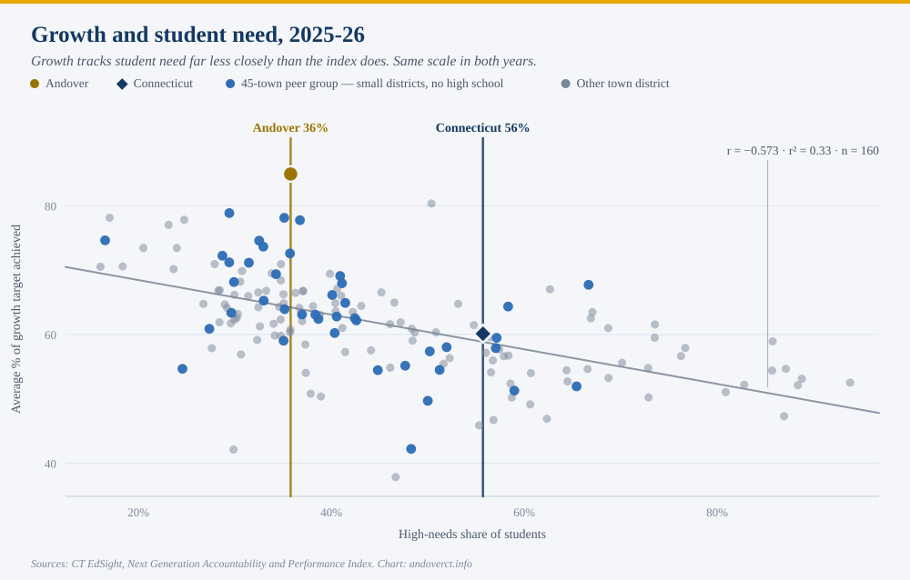
+20.7 how far above its predicted growth Andover landed
1st of 160 where that places it among town districts
Now the caveats, because a number like that invites more weight than it can carry.
Growth is volatile in a district this small. About 109 students sit these tests. Andover’s own record shows how far that can swing: it was 1st in the state on this measure in 2017-18, 2nd in 2022-23, and 134th of 163 in 2021-22. A district that can finish near the bottom and at the top within four years is a district whose single-year figure should be read with caution, in either direction.
One year is not a trend, and this is one year.
The ranking is of districts, not of schools. It compares Andover Elementary’s grades 4 through 8 — in practice grades 4 through 6 — with other districts’ equivalent grades. It says nothing about any high school, including the one Andover students go on to.
What survives all of that is still worth saying plainly. Andover has now posted a positive need-adjusted growth residual in every year of the record except one, and 2025-26 is the largest of them.
Accountability
Growth is one of twelve indicators. The rest arrived with it at the end of October.
88.0% Andover’s accountability index, of the 800 points it is scored out of
72.2% Connecticut
4.3% Andover’s chronic absenteeism, against 16.4% statewide
Stripping out the indicators that are not academic — attendance, physical fitness and the rest — Andover scores 87.0% against the state’s 64.8%.
A word on where that places Andover, because the obvious phrasing would be wrong. Andover is third of 165 town districts on the index. But districts are not scored out of the same total: inapplicable indicators are dropped, so Andover is marked out of 800 points and a K-12 district out of 1,450. Comparing those percentages directly is not like for like. Among the nineteen K-6 districts Andover is second, and the one above it is scored out of just 50 points, which makes its percentage an artifact rather than a result. Among the nine districts scored out of the same 800 points, Andover is first. That last comparison is the defensible one.
Spending
Spending is now the only measure that stops at 2024-25, so the six charts below stay on that year.
Two of them repeat measures from above, at that year, so the set can be read on its own. Where a chart shows performance across all three subjects, it uses the combined index described above.
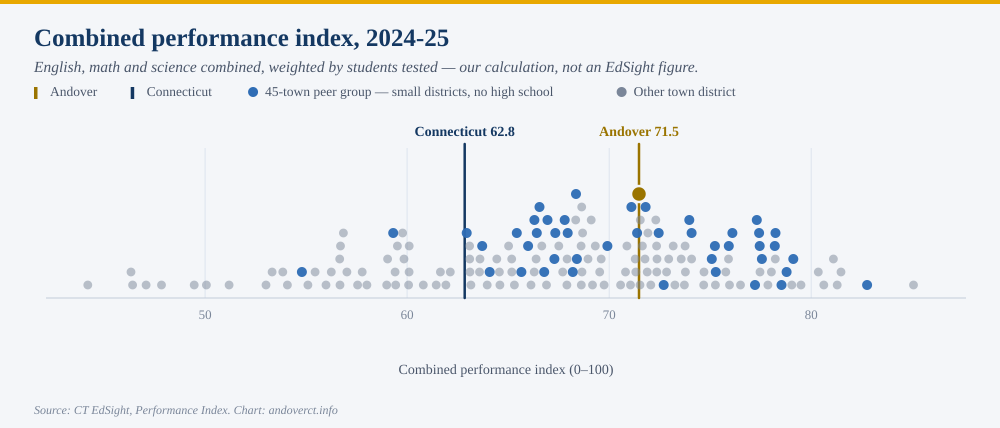
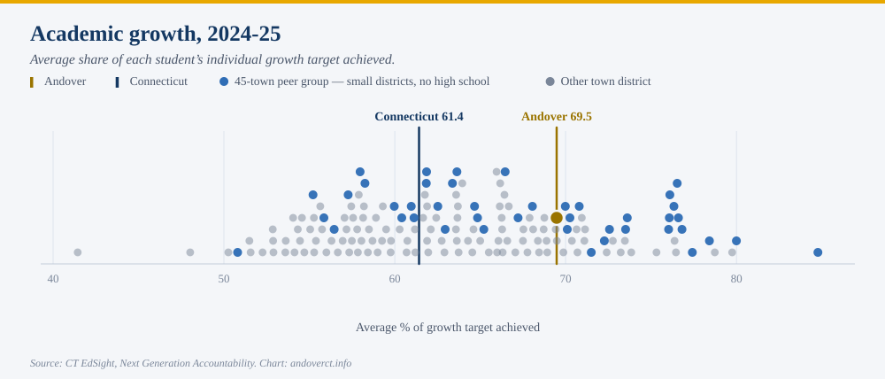
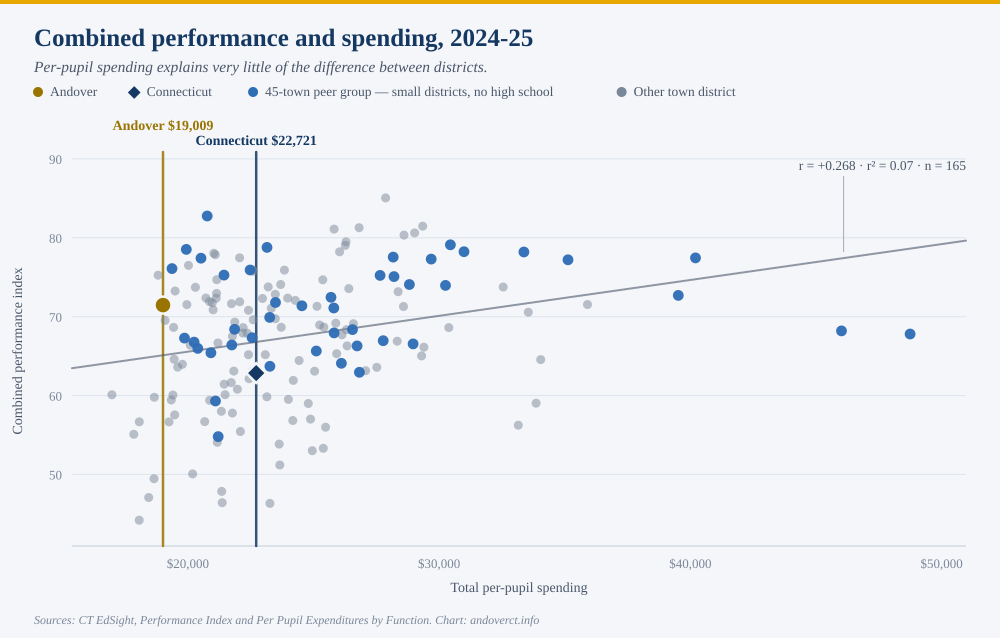
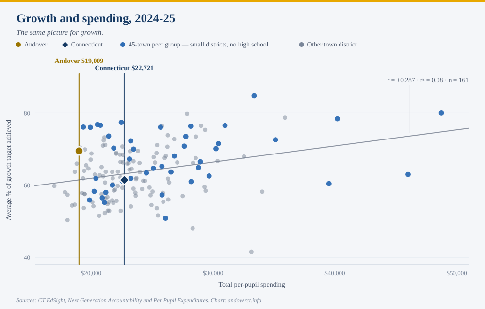
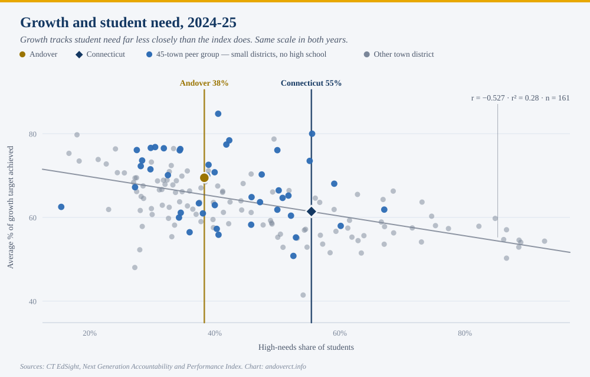
Two things stand out in that set, and both are worth stating plainly because they cut against arguments made in every direction locally.
The first is that per-pupil spending barely relates to results at all. Across the state’s town districts, spending explains something like seven percent of the difference in the combined index and eight percent in growth — and once student need and grade span are accounted for, no statistically detectable amount. That is not evidence that money does not matter. It is evidence that what varies between Connecticut towns is mostly district size and geography, not educational effort, and that test scores cannot settle a budget argument in either direction.
The second is that growth tracks student need far less closely than the combined index does. That is the case for treating growth, rather than the index, as the better guide to what a school itself contributes.
The school's account
The article’s figures are accurate. Three of its themes are worth extending.
On growth. Parker drew the distinction that matters most in this data, and drew it correctly:
Every student gets a target, whether you score a one or a four. So even students performing above grade level have a target score.
— Taylor Parker, Board of Education meeting, Sept. 9, 2026
That is exactly why growth is the fairer measure. Achievement scores largely track which students a district serves; growth asks how far each student moved from their own starting point, and is far less determined by demographics. The figures she gave the board — 68.7 percent of students meeting their ELA target, 67.5 percent in math, against 44.4 and 41.1 a year earlier — are the state’s published growth rates, and they are correct.
On the achievement gap. The article reports that the gap between high-needs students and their classmates narrowed in both subjects, from 20.7 points to 14.5.
We want all students growing.
— Taylor Parker, Board of Education meeting, Sept. 9, 2026
This is the one figure on which we can offer no independent check. Andover’s high-needs subgroup is small enough that the state suppresses its results publicly to protect student confidentiality, so the underlying numbers are not in EdSight. The claim comes from the district’s own data, and should be read as such — not because there is reason to doubt it, but because it cannot be verified the way everything else here can.
On not over-reading one year. The article closes on a note of caution that this report would make anyway, and it is to the school’s credit that it came from the school:
It is not a one-shot deal. We can’t just say we had one good year.
— Taylor Parker, Board of Education meeting, Sept. 9, 2026
About 110 students sit these tests. That is small enough that a strong cohort moves the whole district figure, in either direction. The case for taking this year seriously is not the size of the jump on its own; it is that the jump survives adjustment for student need, that it holds in both subjects independently, and that it sits on a decade in which Andover has almost always performed at or above what its demographics predict.
Documentation
Download
This report is available in four formats, all located alongside this page:
First published September 18, 2026; updated October 29, 2026 with the state accountability release · Data from CT EdSight (Connecticut State Department of Education).